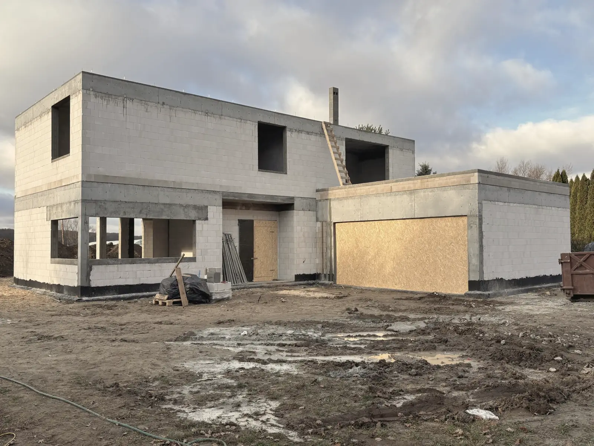

Str. 01 / 03
Warszawa, Wilanów
Dom jednorodzinny z piwnicą
- Powierzchnia
- 290 m²
- Zakres
- Stan surowy otwarty, z materiałem
Nowoczesny dom z piwnicą. Nietypowe rozwiązanie konstrukcyjne: schodkowa ława łącząca płytę fundamentową części podpiwniczonej z resztą budynku. Realizacja wymagała ścisłej współpracy brygad i szczegółowego nadzoru technicznego.